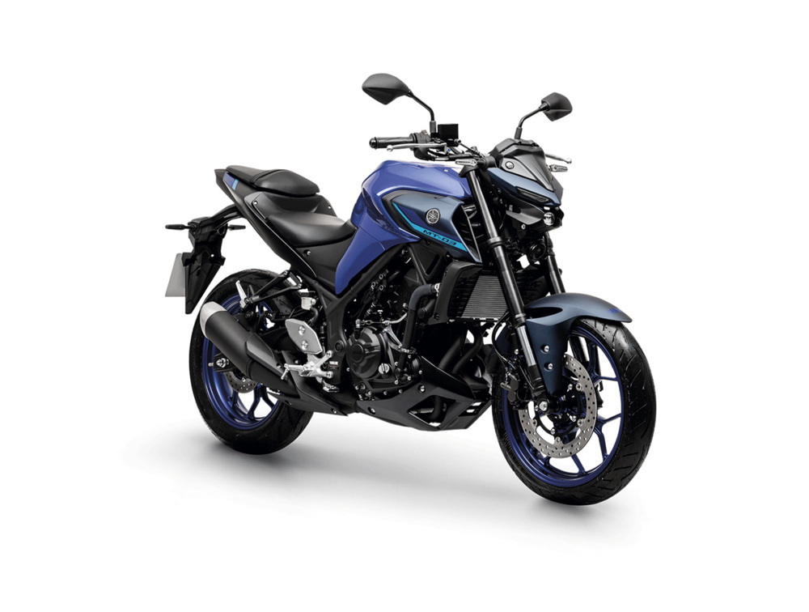

321 cc
Cilindrada bicilindrica en linea con refrigeracion liquida.
Ficha dedicada
La MT-03 es una naked ligera de media-baja cilindrada pensada para combinar uso urbano con rutas de fin de semana. Destaca por su motor bicilindrico de 321 cc, su estilo Hyper Naked y una configuracion que prioriza control, respuesta y confianza para uso diario.

Cilindrada bicilindrica en linea con refrigeracion liquida.
Potencia maxima declarada en ficha de Yamaha Peru.
Capacidad de tanque para trayectos diarios y escapadas.
Frenado con antibloqueo para mayor seguridad en ciudad.
Segun la pagina oficial de Yamaha Peru para MT-03 ABS, estos son los puntos de enfoque del modelo en el mercado local.
Ajusta el consumo esperado para estimar hasta donde podrias llegar con tanque completo.
Valor actual: 26 km/l
Autonomia aproximada: 364 km
En la pagina oficial de Yamaha Peru (MT-03 ABS) se muestra una referencia de Desde S/ 27,501 y US$ 7,699.
Fecha de consulta del dato: 23 de abril de 2026. Este valor puede variar por fecha, tipo de cambio, stock o promociones del concesionario.